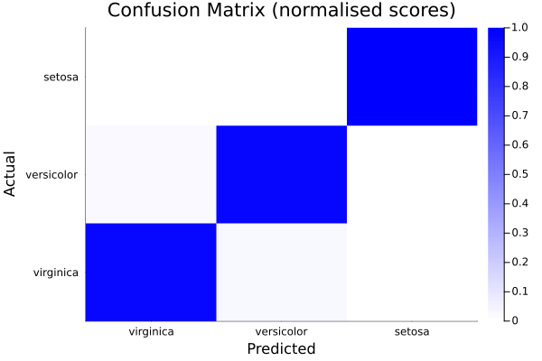
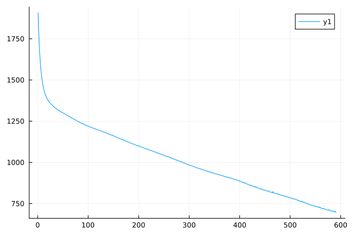
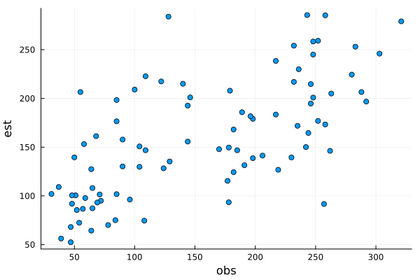

04 NN - 2A: Binary classification (15.0:54.0)
04 NN - 2B: Multinomial classification (15.0:1.0)
04 NN - 2C: Regression (6.0:3.0)
04 NN - 2D: Convolutional neural networks (13.0:19.0)
0402 - Implementation of Neural network workflows
Some stuff to set-up the environment..
julia> cd(@__DIR__)julia> using Pkgjulia> Pkg.activate(".")Activating project at `~/work/SPMLJ/SPMLJ/buildedDoc/04_-_NN_-_Neural_Networks`julia> # If using a Julia version different than 1.10 please uncomment and run the following line (the guarantee of reproducibility will however be lost) Pkg.resolve()Project No packages added to or removed from `~/work/SPMLJ/SPMLJ/buildedDoc/04_-_NN_-_Neural_Networks/Project.toml` Manifest No packages added to or removed from `~/work/SPMLJ/SPMLJ/buildedDoc/04_-_NN_-_Neural_Networks/Manifest.toml`julia> Pkg.instantiate()julia> using Random, Plotsjulia> Random.seed!(123)Random.TaskLocalRNG()julia> ENV["DATADEPS_ALWAYS_ACCEPT"] = "true""true"
We will not run cross validation here to find the optimal hyper-parameters. The process will not be different than those we saw in the lesson on the Perceptron. Instead we focus on creating neural network models, train them based on data and evaluating their predictions. For feed-forward neural networks (both for classification and regression) we will use BetaML, while for Convolutional Neural Networks example we will use the Flux.jl package.
Feed-forward neural networks
Binary classification
Data loading...
julia> using BetaML, DelimitedFilesjulia> data = readdlm(joinpath(dirname(pathof(BetaML)),"..","test","data","binary2DData.csv"),'\t')200×3 Matrix{Float64}: -1.0 1.76 0.4 -1.0 0.979 2.24 -1.0 1.87 -0.977 -1.0 0.95 -0.151 -1.0 -0.103 0.411 -1.0 0.144 1.45 -1.0 0.761 0.122 -1.0 0.444 0.334 -1.0 1.49 -0.205 -1.0 0.313 -0.854 ⋮ 1.0 -0.256 0.977 1.0 2.04 0.343 1.0 1.01 0.528 1.0 3.65 2.16 1.0 2.57 1.78 1.0 1.65 0.384 1.0 1.71 1.24 1.0 2.86 3.14 1.0 3.47 2.85julia> nR = size(data,1)200julia> idx = shuffle(1:nR)200-element Vector{Int64}: 36 68 167 3 116 192 8 24 129 63 ⋮ 142 161 33 140 195 106 98 181 15julia> data = data[idx,:]200×3 Matrix{Float64}: -1.0 0.729 0.129 -1.0 -0.636 0.676 1.0 2.77 0.816 -1.0 1.87 -0.977 1.0 0.576 1.51 1.0 -0.256 0.977 -1.0 0.444 0.334 -1.0 -1.25 0.777 1.0 1.27 0.617 -1.0 -0.6946 -0.1496 ⋮ 1.0 1.31 3.54 1.0 1.28 1.19 -1.0 0.177 -0.402 1.0 -0.0307 4.06 1.0 3.65 2.16 1.0 2.91 2.32 -1.0 0.523 -0.172 1.0 2.7 2.0 -1.0 1.53 1.47julia> X = copy(data[:,[2,3]])200×2 Matrix{Float64}: 0.729 0.129 -0.636 0.676 2.77 0.816 1.87 -0.977 0.576 1.51 -0.256 0.977 0.444 0.334 -1.25 0.777 1.27 0.617 -0.6946 -0.1496 ⋮ 1.31 3.54 1.28 1.19 0.177 -0.402 -0.0307 4.06 3.65 2.16 2.91 2.32 0.523 -0.172 2.7 2.0 1.53 1.47julia> y = max.(0,convert(Array{Int64,1},copy(data[:,1]))) # Converting labels from {-1,1} to {0,1}200-element Vector{Int64}: 0 0 1 0 1 1 0 0 1 0 ⋮ 1 1 0 1 1 1 0 1 0julia> ((xtrain,xtest),(ytrain,ytest)) = partition([X,y],[0.7,0.3])2-element Vector{Vector}: AbstractMatrix{Float64}[[3.47 2.85; -0.4136 -0.7475; … ; -1.25 0.777; -0.0682 1.71], [1.88 -1.35; 2.38 0.944; … ; 1.87 1.7; 0.0458 -0.187]] AbstractVector{Int64}[[1, 0, 1, 1, 1, 1, 1, 1, 0, 1 … 0, 0, 0, 0, 1, 1, 1, 0, 0, 0], [0, 0, 0, 1, 1, 0, 0, 1, 1, 1 … 0, 0, 1, 0, 1, 1, 1, 1, 1, 0]]
Using defaults - hiding complexity
Model definition...
julia> mynn = NeuralNetworkEstimator()NeuralNetworkEstimator - A Feed-forward neural network (unfitted)
Training...
julia> fit!(mynn,xtrain,ytrain)*** *** Training for 200 epochs with algorithm BetaML.Nn.ADAM. Training.. avg loss on epoch 1 (1): 0.26090982433926657 [ Info: Fitting the model on the data failed. Loss is not decreasing. Trying again (unless this is the last attempt). [ Info: Training attempt failed, resetting the model and trying again *** *** Training for 200 epochs with algorithm BetaML.Nn.ADAM. Training.. avg loss on epoch 1 (1): 0.26071428571428573 [ Info: Fitting the model on the data failed. Loss is not decreasing. Trying again (unless this is the last attempt). [ Info: Training attempt failed, resetting the model and trying again *** *** Training for 200 epochs with algorithm BetaML.Nn.ADAM. Training.. avg loss on epoch 1 (1): 0.26071428571428573 [ Info: Fitting the model on the data failed. Loss is not decreasing. Trying again (unless this is the last attempt). [ Info: Training attempt failed, resetting the model and trying again *** *** Training for 200 epochs with algorithm BetaML.Nn.ADAM. Training.. avg loss on epoch 1 (1): 1.3939309526964028 Training.. avg loss on epoch 20 (20): 0.23446291196486121 Training.. avg loss on epoch 40 (40): 0.06924254383095022 Training.. avg loss on epoch 60 (60): 0.05145570593779608 Training.. avg loss on epoch 80 (80): 0.04516465131529135 Training.. avg loss on epoch 100 (100): 0.04243914920353442 Training the Neural Network... 50%|██████████▋ | ETA: 0:00:01Training.. avg loss on epoch 120 (120): 0.040134579564991855 Training.. avg loss on epoch 140 (140): 0.037519469308851236 Training.. avg loss on epoch 160 (160): 0.0357620244230761 Training.. avg loss on epoch 180 (180): 0.034149730865420044 Training.. avg loss on epoch 200 (200): 0.03391567033887058 Training the Neural Network... 100%|█████████████████████| Time: 0:00:02 Training of 200 epoch completed. Final epoch error: 0.03391567033887058. 140-element Vector{Float64}: 1.1582582961799681 0.0 1.1363831395768225 0.9703691057502191 0.2176807777409212 0.8998833681152743 1.044426770873908 1.1488577402757822 0.0 0.7549621576197574 ⋮ 0.06372953964010941 0.0 0.0 0.9230017089645656 1.0077951106897112 0.7485906459915448 0.0 0.0 0.46596804626983535julia> ŷtrain = predict(mynn, xtrain) |> makecolvector .|> round .|> Int140-element Vector{Int64}: 1 0 1 1 0 1 1 1 0 1 ⋮ 0 0 0 1 1 1 0 0 0julia> ŷtest = predict(mynn, xtest) |> makecolvector .|> round .|> Int60-element Vector{Int64}: 0 1 1 1 1 0 0 1 1 1 ⋮ 0 1 0 1 1 1 1 1 0julia> trainAccuracy = accuracy(ytrain,ŷtrain)0.9285714285714286julia> testAccuracy = accuracy(ytest,ŷtest)0.8666666666666667
Specifying all options
Creating a custom callback function to receive info during training...
julia> function myOwnTrainingInfo(nn,xbatch,ybatch,x,y;n,n_batches,epochs,epochs_ran,verbosity,n_epoch,n_batch) if verbosity == NONE return false # doesn't stop the training end nMsgDict = Dict(LOW => 0, STD => 10,HIGH => 100, FULL => n) nMsgs = nMsgDict[verbosity] if verbosity == FULL || ( n_batch == n_batches && ( n_epoch == 1 || n_epoch % ceil(epochs/nMsgs) == 0)) ϵ = BetaML.Nn.loss(nn,x,y) println("Training.. \t avg loss on epoch $n_epoch ($(n_epoch+epochs_ran)): \t $(ϵ)") end return false endmyOwnTrainingInfo (generic function with 1 method)
Model definition...
julia> l1 = DenseLayer(2,5,f=tanh, df= dtanh,rng=copy(FIXEDRNG))BetaML.Nn.DenseLayer{typeof(tanh), typeof(BetaML.Utils.dtanh), Float64}([-0.5906259287724187 -0.030940667488043583; -0.24536094247801754 0.48878436852866713; … ; -0.8466984663657858 0.027858152254290336; -0.11481842953412624 -0.009180955255778445], [0.37280922460295074, 0.35842073435858446, 0.696721837875378, 0.8225343299333828, 0.44293565195483586], tanh, BetaML.Utils.dtanh)julia> l2 = DenseLayer(5,5,f=relu,df=drelu,rng=copy(FIXEDRNG))BetaML.Nn.DenseLayer{typeof(BetaML.Utils.relu), typeof(BetaML.Utils.drelu), Float64}([-0.49415310523844497 -0.025886819681528617 … 0.09224620317870791 -0.2298725180847525; -0.20528369264408397 0.40894634274263597 … 0.01065168104625569 0.04243100148415224; … ; -0.7083987613359595 0.023307802404264888 … -0.3619336136169306 -0.4825559053138102; -0.09606399030062296 -0.0076813382679077336 … -0.3824319138128976 0.21378287379211514], [-0.11178452751598777, -0.2115472973462721, 0.12029035453379433, -0.06939594013486328, -0.5177091839997635], BetaML.Utils.relu, BetaML.Utils.drelu)julia> l3 = DenseLayer(5,1,f=sigmoid,df=dsigmoid,rng=copy(FIXEDRNG))BetaML.Nn.DenseLayer{typeof(BetaML.Utils.sigmoid), typeof(BetaML.Utils.dsigmoid), Float64}([-0.6379489156883928 -0.2650201076194998 … -0.9145388683760447 -0.12401807820151456], [-0.033419740504278206], BetaML.Utils.sigmoid, BetaML.Utils.dsigmoid)julia> mynn = NeuralNetworkEstimator(layers=[l1,l2,l3],loss=squared_cost,dloss=dsquared_cost,descr="A classification task", cb=myOwnTrainingInfo,epochs=300,batch_size=6,opt_alg=ADAM(η=t -> 0.001, λ=1.0, β₁=0.9, β₂=0.999, ϵ=1e-8),rng=copy(FIXEDRNG),verbosity=STD)NeuralNetworkEstimator - A Feed-forward neural network (unfitted)
Training...
julia> fit!(mynn,xtrain,ytrain)*** *** Training A classification task for 300 epochs with algorithm BetaML.Nn.ADAM. Training.. avg loss on epoch 1 (1): 0.19401305963101903 Training.. avg loss on epoch 30 (30): 0.08139115804459299 Training the Neural Network... 15%|███▏ | ETA: 0:00:06Training.. avg loss on epoch 60 (60): 0.03648311743226808 Training.. avg loss on epoch 90 (90): 0.03123366353097806 Training the Neural Network... 30%|██████▍ | ETA: 0:00:05Training.. avg loss on epoch 120 (120): 0.030181859010414622 Training the Neural Network... 46%|█████████▋ | ETA: 0:00:04Training.. avg loss on epoch 150 (150): 0.029730544377672353 Training.. avg loss on epoch 180 (180): 0.029513236986826966 Training the Neural Network... 62%|█████████████ | ETA: 0:00:03Training.. avg loss on epoch 210 (210): 0.029364276253059193 Training the Neural Network... 77%|████████████████▎ | ETA: 0:00:01Training.. avg loss on epoch 240 (240): 0.029244402332445026 Training.. avg loss on epoch 270 (270): 0.029151062734420627 Training the Neural Network... 93%|███████████████████▌ | ETA: 0:00:00Training.. avg loss on epoch 300 (300): 0.02907635334510089 Training the Neural Network... 100%|█████████████████████| Time: 0:00:06 Training of 300 epoch completed. Final epoch error: 0.02907635334510089. 140-element Vector{Float64}: 0.9597788104343852 0.0009782390799910115 0.958526684996657 0.953378317512109 0.014249438933336843 0.9466003605865941 0.9569430254945526 0.959504426057866 0.004054598381147219 0.8983050347238137 ⋮ 0.011608956587669672 0.07805292987885305 0.002032014732880313 0.9473647126280018 0.9551745193919742 0.8858158349187117 0.0014352760715813466 0.0016241889154051694 0.4362203074128321julia> ŷtrain = predict(mynn, xtrain) |> makecolvector .|> round .|> Int140-element Vector{Int64}: 1 0 1 1 0 1 1 1 0 1 ⋮ 0 0 0 1 1 1 0 0 0julia> ŷtest = predict(mynn, xtest) |> makecolvector .|> round .|> Int60-element Vector{Int64}: 0 1 1 1 1 0 0 1 1 1 ⋮ 0 1 0 1 1 1 1 1 0julia> trainAccuracy = accuracy(ŷtrain,ytrain)0.9357142857142857julia> testAccuracy = accuracy(ŷtest,ytest)0.9333333333333333
Multinomial classification
We want to determine the plant species given some botanic measures of the flower
julia> iris = readdlm(joinpath(dirname(Base.find_package("BetaML")),"..","test","data","iris.csv"),',',skipstart=1)150×5 Matrix{Any}: 5.1 3.5 1.4 0.2 "setosa" 4.9 3.0 1.4 0.2 "setosa" 4.7 3.2 1.3 0.2 "setosa" 4.6 3.1 1.5 0.2 "setosa" 5.0 3.6 1.4 0.2 "setosa" 5.4 3.9 1.7 0.4 "setosa" 4.6 3.4 1.4 0.3 "setosa" 5.0 3.4 1.5 0.2 "setosa" 4.4 2.9 1.4 0.2 "setosa" 4.9 3.1 1.5 0.1 "setosa" ⋮ 6.9 3.1 5.1 2.3 "virginica" 5.8 2.7 5.1 1.9 "virginica" 6.8 3.2 5.9 2.3 "virginica" 6.7 3.3 5.7 2.5 "virginica" 6.7 3.0 5.2 2.3 "virginica" 6.3 2.5 5.0 1.9 "virginica" 6.5 3.0 5.2 2.0 "virginica" 6.2 3.4 5.4 2.3 "virginica" 5.9 3.0 5.1 1.8 "virginica"julia> iris = iris[shuffle(axes(iris, 1)), :] # Shuffle the records, as they aren't by default150×5 Matrix{Any}: 6.1 2.6 5.6 1.4 "virginica" 6.0 3.0 4.8 1.8 "virginica" 7.7 2.6 6.9 2.3 "virginica" 6.0 3.4 4.5 1.6 "versicolor" 6.1 2.8 4.7 1.2 "versicolor" 5.0 2.0 3.5 1.0 "versicolor" 4.4 3.2 1.3 0.2 "setosa" 4.6 3.4 1.4 0.3 "setosa" 5.9 3.0 5.1 1.8 "virginica" 7.7 3.8 6.7 2.2 "virginica" ⋮ 5.8 2.7 5.1 1.9 "virginica" 7.4 2.8 6.1 1.9 "virginica" 5.7 3.8 1.7 0.3 "setosa" 5.1 3.5 1.4 0.3 "setosa" 5.7 2.5 5.0 2.0 "virginica" 4.8 3.1 1.6 0.2 "setosa" 6.4 2.8 5.6 2.1 "virginica" 5.4 3.0 4.5 1.5 "versicolor" 4.8 3.0 1.4 0.1 "setosa"julia> x = convert(Array{Float64,2}, iris[:,1:4])150×4 Matrix{Float64}: 6.1 2.6 5.6 1.4 6.0 3.0 4.8 1.8 7.7 2.6 6.9 2.3 6.0 3.4 4.5 1.6 6.1 2.8 4.7 1.2 5.0 2.0 3.5 1.0 4.4 3.2 1.3 0.2 4.6 3.4 1.4 0.3 5.9 3.0 5.1 1.8 7.7 3.8 6.7 2.2 ⋮ 5.8 2.7 5.1 1.9 7.4 2.8 6.1 1.9 5.7 3.8 1.7 0.3 5.1 3.5 1.4 0.3 5.7 2.5 5.0 2.0 4.8 3.1 1.6 0.2 6.4 2.8 5.6 2.1 5.4 3.0 4.5 1.5 4.8 3.0 1.4 0.1julia> ystring = String.(iris[:, 5])150-element Vector{String}: "virginica" "virginica" "virginica" "versicolor" "versicolor" "versicolor" "setosa" "setosa" "virginica" "virginica" ⋮ "virginica" "virginica" "setosa" "setosa" "virginica" "setosa" "virginica" "versicolor" "setosa"julia> iemod = OrdinalEncoder()A BetaML.Utils.OrdinalEncoder BetaMLModel (unfitted)julia> y = fit!(iemod,ystring)150-element Vector{Int64}: 1 1 1 2 2 2 3 3 1 1 ⋮ 1 1 3 3 1 3 1 2 3julia> ((xtrain,xtest),(ytrain,ytest)) = partition([x,y],[0.8,0.2],shuffle=false)2-element Vector{Vector}: AbstractMatrix{Float64}[[6.1 2.6 5.6 1.4; 6.0 3.0 4.8 1.8; … ; 6.6 3.0 4.4 1.4; 6.1 2.9 4.7 1.4], [5.4 3.4 1.5 0.4; 6.8 3.0 5.5 2.1; … ; 5.4 3.0 4.5 1.5; 4.8 3.0 1.4 0.1]] AbstractVector{Int64}[[1, 1, 1, 2, 2, 2, 3, 3, 1, 1 … 2, 1, 1, 1, 1, 1, 2, 2, 2, 2], [3, 1, 1, 1, 3, 2, 3, 2, 1, 1 … 3, 1, 1, 3, 3, 1, 3, 1, 2, 3]]julia> ohmod = OneHotEncoder()A BetaML.Utils.OneHotEncoder BetaMLModel (unfitted)julia> ytrain_oh = fit!(ohmod,ytrain) # Convert to One-hot representation (e.g. 2 => [0 1 0], 3 => [0 0 1])120×3 Matrix{Bool}: 1 0 0 1 0 0 1 0 0 0 1 0 0 1 0 0 1 0 0 0 1 0 0 1 1 0 0 1 0 0 ⋮ 1 0 0 1 0 0 1 0 0 1 0 0 1 0 0 0 1 0 0 1 0 0 1 0 0 1 0
Define the Artificial Neural Network model
julia> l1 = DenseLayer(4,10,f=relu) # Activation function is ReLUBetaML.Nn.DenseLayer{typeof(BetaML.Utils.relu), typeof(BetaML.Utils.drelu), Float64}([-0.48315159611711644 -0.4712760252371029 -0.6030979667080739 -0.5431592153802487; 0.4006918742299843 0.44309796809673685 -0.5434273985913811 -0.4890580824279859; … ; -0.16697455240892617 0.21750066773574073 -0.3962388191099082 0.46298640285891457; -0.31973687949284646 -0.05211867111600332 -0.47473882845055687 -0.07465891614699849], [0.50526352775803, -0.3939283682185577, 0.5296519646291429, -0.09251385016341696, 0.2443719840169981, 0.653577403487275, -0.6219350219932457, 0.3511513531390318, 0.449096543669512, -0.3469213120356638], BetaML.Utils.relu, BetaML.Utils.drelu)julia> l2 = DenseLayer(10,3) # Activation function is identity by defaultBetaML.Nn.DenseLayer{typeof(identity), typeof(BetaML.Utils.didentity), Float64}([0.6580743715587076 -0.5197940791447346 … 0.08607325634837593 -0.1838615070444949; 0.6086754044016875 -0.16623339943045967 … 0.038757467149408975 -0.46500054406677493; 0.26325474298674856 -0.2908284120802163 … 0.6723956479774753 0.28025717300607245], [-0.4765054770619609, 0.5915417241562542, 0.013832809569276683], identity, BetaML.Utils.didentity)julia> l3 = VectorFunctionLayer(3,f=softmax) # Add a (parameterless) layer whose activation function (softMax in this case) is defined to all its nodes at onceBetaML.Nn.VectorFunctionLayer{0, typeof(BetaML.Utils.softmax), typeof(BetaML.Utils.dsoftmax), Nothing, Float64}(fill(NaN), 3, 3, BetaML.Utils.softmax, BetaML.Utils.dsoftmax, nothing)julia> mynn = NeuralNetworkEstimator(layers=[l1,l2,l3],loss=crossentropy,batch_size=6,descr="Multinomial logistic regression Model Sepal") # Build the NN and use crossEntropy as error function (the squared cost - aka MSE - could also be used)NeuralNetworkEstimator - A Feed-forward neural network (unfitted)
Training it (default to ADAM)
julia> fit!(mynn,fit!(Scaler(),xtrain),ytrain_oh) # Use optAlg=SGD() to use Stochastic Gradient Descent instead*** *** Training Multinomial logistic regression Model Sepal for 200 epochs with algorithm BetaML.Nn.ADAM. Training.. avg loss on epoch 1 (1): 1.4673634490782557 Training.. avg loss on epoch 20 (20): 0.474744098368001 Training.. avg loss on epoch 40 (40): 0.28008278901537825 Training.. avg loss on epoch 60 (60): 0.20711373940999528 Training.. avg loss on epoch 80 (80): 0.15731375273053266 Training.. avg loss on epoch 100 (100): 0.1217994138288231 Training.. avg loss on epoch 120 (120): 0.09809925566858414 Training.. avg loss on epoch 140 (140): 0.0824569344070612 Training.. avg loss on epoch 160 (160): 0.07205346768439005 Training.. avg loss on epoch 180 (180): 0.0647603046343692 Training.. avg loss on epoch 200 (200): 0.059464701718757916 Training of 200 epoch completed. Final epoch error: 0.059464701718757916. 120×3 Matrix{Float64}: 0.659812 0.33961 0.000578032 0.766489 0.23191 0.00160068 0.999867 0.000133116 1.48662e-7 0.0829845 0.909547 0.00746882 0.0150461 0.983412 0.00154206 0.000672974 0.998514 0.000812609 4.61952e-10 5.40619e-5 0.999946 6.63823e-10 5.36191e-5 0.999946 0.906652 0.0925918 0.00075569 0.994828 0.00515299 1.86132e-5 ⋮ 0.925954 0.0736178 0.000427955 0.982097 0.0178723 3.03917e-5 0.970004 0.0298354 0.000160458 0.998922 0.00107546 2.84621e-6 0.975764 0.0241374 9.86232e-5 0.000620261 0.998085 0.00129442 0.00201295 0.996445 0.00154173 0.0137256 0.984137 0.0021377 0.0740966 0.92326 0.00264305
Test it
julia> ŷtrain = predict(mynn,fit!(Scaler(),xtrain)) # Note the scaling model120×3 Matrix{Float64}: 0.659812 0.33961 0.000578032 0.766489 0.23191 0.00160068 0.999867 0.000133116 1.48662e-7 0.0829845 0.909547 0.00746882 0.0150461 0.983412 0.00154206 0.000672974 0.998514 0.000812609 4.61952e-10 5.40619e-5 0.999946 6.63823e-10 5.36191e-5 0.999946 0.906652 0.0925918 0.00075569 0.994828 0.00515299 1.86132e-5 ⋮ 0.925954 0.0736178 0.000427955 0.982097 0.0178723 3.03917e-5 0.970004 0.0298354 0.000160458 0.998922 0.00107546 2.84621e-6 0.975764 0.0241374 9.86232e-5 0.000620261 0.998085 0.00129442 0.00201295 0.996445 0.00154173 0.0137256 0.984137 0.0021377 0.0740966 0.92326 0.00264305julia> ŷtest = predict(mynn,fit!(Scaler(),xtest))30×3 Matrix{Float64}: 1.28141e-7 0.0171193 0.982881 0.998129 0.00186163 9.55199e-6 0.999511 0.000488277 7.78586e-7 0.955707 0.0439998 0.000293729 6.44847e-8 0.0106424 0.989358 0.00248345 0.996747 0.000769172 1.20574e-7 0.0138696 0.98613 0.233735 0.762402 0.00386244 0.902366 0.0973297 0.000304371 0.996423 0.00356858 8.66661e-6 ⋮ 0.991144 0.00881333 4.27692e-5 0.997508 0.00248698 5.34793e-6 3.2895e-8 0.00617107 0.993829 1.89534e-8 0.00205338 0.997947 0.993936 0.00604591 1.80155e-5 7.7089e-8 0.00915631 0.990844 0.998739 0.00125543 5.2789e-6 0.562025 0.434684 0.00329068 3.27148e-8 0.00883218 0.991168julia> trainAccuracy = accuracy(ytrain,ŷtrain)0.9833333333333333julia> testAccuracy = accuracy(ytest,ŷtest,tol=1,ignorelabels=false)0.9333333333333333julia> cm = ConfusionMatrix()A BetaML.Utils.ConfusionMatrix BetaMLModel (unfitted)julia> fit!(cm,inverse_predict(iemod,ytrain),inverse_predict(iemod,mode(ŷtrain)))3×3 Matrix{Float64}: 0.974359 0.025641 0.0 0.0227273 0.977273 0.0 0.0 0.0 1.0julia> println(cm)A BetaML.Utils.ConfusionMatrix BetaMLModel (fitted) ----------------------------------------------------------------- *** CONFUSION MATRIX *** Scores actual (rows) vs predicted (columns): 4×4 Matrix{Any}: "Labels" "virginica" "versicolor" "setosa" "virginica" 38 1 0 "versicolor" 1 43 0 "setosa" 0 0 37 Normalised scores actual (rows) vs predicted (columns): 4×4 Matrix{Any}: "Labels" "virginica" "versicolor" "setosa" "virginica" 0.974359 0.025641 0.0 "versicolor" 0.0227273 0.977273 0.0 "setosa" 0.0 0.0 1.0 *** CONFUSION REPORT *** - Accuracy: 0.9833333333333333 - Misclassification rate: 0.01666666666666672 - Number of classes: 3 N Class precision recall specificity f1score actual_count predicted_count TPR TNR support 1 virginica 0.974 0.974 0.988 0.974 39 39 2 versicolor 0.977 0.977 0.987 0.977 44 44 3 setosa 1.000 1.000 1.000 1.000 37 37 - Simple avg. 0.984 0.984 0.991 0.984 - Weighted avg. 0.983 0.983 0.991 0.983 ----------------------------------------------------------------- Output of `info(cm)`: - mean_precision: (0.9838772338772338, 0.9833333333333333) - fitted_records: 120 - specificity: [0.9876543209876543, 0.9868421052631579, 1.0] - precision: [0.9743589743589743, 0.9772727272727273, 1.0] - misclassification: 0.01666666666666672 - mean_recall: (0.9838772338772338, 0.9833333333333333) - n_categories: 3 - normalised_scores: [0.9743589743589743 0.02564102564102564 0.0; 0.022727272727272728 0.9772727272727273 0.0; 0.0 0.0 1.0] - tn: [80, 75, 83] - mean_f1score: (0.9838772338772338, 0.9833333333333333) - actual_count: [39, 44, 37] - accuracy: 0.9833333333333333 - recall: [0.9743589743589743, 0.9772727272727273, 1.0] - f1score: [0.9743589743589743, 0.9772727272727273, 1.0] - mean_specificity: (0.9914988087502707, 0.9911630929174788) - predicted_count: [39, 44, 37] - scores: [38 1 0; 1 43 0; 0 0 37] - tp: [38, 43, 37] - fn: [1, 1, 0] - categories: ["virginica", "versicolor", "setosa"] - fp: [1, 1, 0]julia> res = info(cm)Dict{String, Any} with 21 entries: "mean_precision" => (0.983877, 0.983333) "fitted_records" => 120 "specificity" => [0.987654, 0.986842, 1.0] "precision" => [0.974359, 0.977273, 1.0] "misclassification" => 0.0166667 "mean_recall" => (0.983877, 0.983333) "n_categories" => 3 "normalised_scores" => [0.974359 0.025641 0.0; 0.0227273 0.977273 0.0; 0.0 0.… "tn" => [80, 75, 83] "mean_f1score" => (0.983877, 0.983333) "actual_count" => [39, 44, 37] "accuracy" => 0.983333 "recall" => [0.974359, 0.977273, 1.0] "f1score" => [0.974359, 0.977273, 1.0] "mean_specificity" => (0.991499, 0.991163) "predicted_count" => [39, 44, 37] "scores" => [38 1 0; 1 43 0; 0 0 37] "tp" => [38, 43, 37] "fn" => [1, 1, 0] ⋮ => ⋮julia> heatmap(string.(res["categories"]),string.(res["categories"]),res["normalised_scores"],seriescolor=cgrad([:white,:blue]),xlabel="Predicted",ylabel="Actual", title="Confusion Matrix (normalised scores)")Plot{Plots.GRBackend() n=1}julia> savefig("cm_iris.svg");

Regression
Data Loading and processing..
julia> using Pipe, HTTP, CSV, DataFramesjulia> urlData = "https://www4.stat.ncsu.edu/~boos/var.select/diabetes.tab.txt""https://www4.stat.ncsu.edu/~boos/var.select/diabetes.tab.txt"julia> data = @pipe HTTP.get(urlData).body |> CSV.File(_, delim='\t') |> DataFrame442×11 DataFrame Row │ AGE SEX BMI BP S1 S2 S3 S4 S5 ⋯ │ Int64 Int64 Float64 Float64 Int64 Float64 Float64 Float64 Float ⋯ ─────┼────────────────────────────────────────────────────────────────────────── 1 │ 59 2 32.1 101.0 157 93.2 38.0 4.0 4.85 ⋯ 2 │ 48 1 21.6 87.0 183 103.2 70.0 3.0 3.89 3 │ 72 2 30.5 93.0 156 93.6 41.0 4.0 4.67 4 │ 24 1 25.3 84.0 198 131.4 40.0 5.0 4.89 5 │ 50 1 23.0 101.0 192 125.4 52.0 4.0 4.29 ⋯ 6 │ 23 1 22.6 89.0 139 64.8 61.0 2.0 4.18 7 │ 36 2 22.0 90.0 160 99.6 50.0 3.0 3.95 8 │ 66 2 26.2 114.0 255 185.0 56.0 4.55 4.24 ⋮ │ ⋮ ⋮ ⋮ ⋮ ⋮ ⋮ ⋮ ⋮ ⋮ ⋱ 436 │ 45 1 24.2 83.0 177 118.4 45.0 4.0 4.21 ⋯ 437 │ 33 1 19.5 80.0 171 85.4 75.0 2.0 3.97 438 │ 60 2 28.2 112.0 185 113.8 42.0 4.0 4.98 439 │ 47 2 24.9 75.0 225 166.0 42.0 5.0 4.44 440 │ 60 2 24.9 99.67 162 106.6 43.0 3.77 4.12 ⋯ 441 │ 36 1 30.0 95.0 201 125.2 42.0 4.79 5.12 442 │ 36 1 19.6 71.0 250 133.2 97.0 3.0 4.59 3 columns and 427 rows omittedjulia> ohmod = OneHotEncoder()A BetaML.Utils.OneHotEncoder BetaMLModel (unfitted)julia> sex_oh = fit!(ohmod,data.SEX)442×2 Matrix{Bool}: 0 1 1 0 0 1 1 0 1 0 1 0 0 1 0 1 0 1 1 0 ⋮ 1 0 1 0 1 0 1 0 0 1 0 1 0 1 1 0 1 0julia> X = hcat(data.AGE, Matrix(data[:,3:10]),sex_oh)442×11 Matrix{Float64}: 59.0 32.1 101.0 157.0 93.2 38.0 4.0 4.8598 87.0 0.0 1.0 48.0 21.6 87.0 183.0 103.2 70.0 3.0 3.8918 69.0 1.0 0.0 72.0 30.5 93.0 156.0 93.6 41.0 4.0 4.6728 85.0 0.0 1.0 24.0 25.3 84.0 198.0 131.4 40.0 5.0 4.8903 89.0 1.0 0.0 50.0 23.0 101.0 192.0 125.4 52.0 4.0 4.2905 80.0 1.0 0.0 23.0 22.6 89.0 139.0 64.8 61.0 2.0 4.1897 68.0 1.0 0.0 36.0 22.0 90.0 160.0 99.6 50.0 3.0 3.9512 82.0 0.0 1.0 66.0 26.2 114.0 255.0 185.0 56.0 4.55 4.2485 92.0 0.0 1.0 60.0 32.1 83.0 179.0 119.4 42.0 4.0 4.4773 94.0 0.0 1.0 29.0 30.0 85.0 180.0 93.4 43.0 4.0 5.3845 88.0 1.0 0.0 ⋮ ⋮ ⋮ 41.0 20.8 86.0 223.0 128.2 83.0 3.0 4.0775 89.0 1.0 0.0 53.0 26.5 97.0 193.0 122.4 58.0 3.0 4.1431 99.0 1.0 0.0 45.0 24.2 83.0 177.0 118.4 45.0 4.0 4.2195 82.0 1.0 0.0 33.0 19.5 80.0 171.0 85.4 75.0 2.0 3.9703 80.0 1.0 0.0 60.0 28.2 112.0 185.0 113.8 42.0 4.0 4.9836 93.0 0.0 1.0 47.0 24.9 75.0 225.0 166.0 42.0 5.0 4.4427 102.0 0.0 1.0 60.0 24.9 99.67 162.0 106.6 43.0 3.77 4.1271 95.0 0.0 1.0 36.0 30.0 95.0 201.0 125.2 42.0 4.79 5.1299 85.0 1.0 0.0 36.0 19.6 71.0 250.0 133.2 97.0 3.0 4.5951 92.0 1.0 0.0julia> y = data.Y442-element Vector{Int64}: 151 75 141 206 135 97 138 63 110 310 ⋮ 72 49 64 48 178 104 132 220 57julia> (xtrain,xval),(ytrain,yval) = partition([X,y],[0.8,0.2])2-element Vector{Vector}: AbstractMatrix{Float64}[[52.0 24.0 … 1.0 0.0; 53.0 24.4 … 0.0 1.0; … ; 46.0 23.8 … 0.0 1.0; 54.0 21.0 … 1.0 0.0], [67.0 31.6 … 1.0 0.0; 57.0 31.9 … 0.0 1.0; … ; 33.0 35.0 … 1.0 0.0; 42.0 31.9 … 1.0 0.0]] AbstractVector{Int64}[[98, 107, 96, 214, 190, 296, 121, 61, 72, 52 … 107, 115, 308, 306, 53, 72, 74, 116, 209, 63], [303, 263, 104, 252, 37, 90, 109, 248, 51, 47 … 248, 31, 48, 55, 170, 177, 68, 104, 128, 85]]
Model definition...
julia> l1 = DenseLayer(11,20,f=relu)BetaML.Nn.DenseLayer{typeof(BetaML.Utils.relu), typeof(BetaML.Utils.drelu), Float64}([-0.3697597737138711 -0.4230684696456193 … 0.28229077995943613 -0.3936303400468712; 0.1313301252415176 -0.1779995213118945 … 0.17630671738836895 0.002660321174489999; … ; 0.3021997976858893 0.18608898451149464 … 0.3869849606534626 0.06373806862464731; 0.40268686474146537 -0.27550321146151235 … -0.13618416890468105 0.3250210212699352], [0.3349901729307034, 0.3412392093624634, -0.3819541768634581, -0.1540226571821086, 0.040336291624714415, 0.0340955862755144, -0.31112279340526106, -0.12250195394568586, -0.16796643288808755, -0.4174208740072129, -0.0021885703327518824, 0.22311385582227922, -0.19087494684186201, 0.1429574740286595, -0.22563898886989123, -0.3602817340004708, 0.3412235188582841, 0.2593613698803641, -0.11105218874508394, 0.04030760506595954], BetaML.Utils.relu, BetaML.Utils.drelu)julia> l2 = DenseLayer(20,20,f=relu)BetaML.Nn.DenseLayer{typeof(BetaML.Utils.relu), typeof(BetaML.Utils.drelu), Float64}([-0.15119746014060612 -0.05111639146106606 … 0.29140497635507384 0.2028306640636633; 0.17102817685487776 -0.2542181060606826 … -0.1319952687457558 -0.0872386735415609; … ; 0.23781766792711806 -0.22873604602625044 … -0.35853688500393943 -0.12936877066338714; -0.16924782792384055 0.09429115301545399 … 0.37393730102825845 0.2209239696310738], [-0.361640879291872, 0.32331371446745777, -0.03825901690412531, -0.15347511599252225, 0.26973920761583486, 0.22515816884528944, 0.38494270025682337, 0.24481952674926882, 0.2564020065590448, -0.05879299482993011, 0.17062696069696587, -0.10583686884980498, 0.2538253481443071, -0.3556988449910183, 0.1567891283140756, -0.2872715486442417, -0.23497144133023445, -0.3689878004428162, 0.3575760635765088, 0.2821895404861278], BetaML.Utils.relu, BetaML.Utils.drelu)julia> l3 = DenseLayer(20,1,f=relu) # y is positiveBetaML.Nn.DenseLayer{typeof(BetaML.Utils.relu), typeof(BetaML.Utils.drelu), Float64}([0.42285394515502306 0.17475434705316184 … 0.15192163282174276 -0.3524880536631956], [0.5326138529833364], BetaML.Utils.relu, BetaML.Utils.drelu)julia> mynn = NeuralNetworkEstimator(layers=[l1,l2,l3],loss=squared_cost, batch_size=6,epochs=600)NeuralNetworkEstimator - A Feed-forward neural network (unfitted)
Training...
julia> fit!(mynn,fit!(Scaler(),xtrain),ytrain)*** *** Training for 600 epochs with algorithm BetaML.Nn.ADAM. Training.. avg loss on epoch 1 (1): 14084.085244711765 Training the Neural Network... 3%|▌ | ETA: 0:00:37 Training the Neural Network... 6%|█▏ | ETA: 0:00:35 Training the Neural Network... 8%|█▊ | ETA: 0:00:34Training.. avg loss on epoch 60 (60): 1298.584492612036 Training the Neural Network... 11%|██▍ | ETA: 0:00:32 Training the Neural Network... 14%|███ | ETA: 0:00:31 Training the Neural Network... 17%|███▌ | ETA: 0:00:30 Training the Neural Network... 20%|████▏ | ETA: 0:00:29Training.. avg loss on epoch 120 (120): 1206.2534373195647 Training the Neural Network... 22%|████▊ | ETA: 0:00:28 Training the Neural Network... 25%|█████▍ | ETA: 0:00:27 Training the Neural Network... 28%|█████▉ | ETA: 0:00:26Training.. avg loss on epoch 180 (180): 1135.9483642782611 Training the Neural Network... 31%|██████▌ | ETA: 0:00:25 Training the Neural Network... 34%|███████▏ | ETA: 0:00:24 Training the Neural Network... 37%|███████▊ | ETA: 0:00:23 Training the Neural Network... 40%|████████▎ | ETA: 0:00:22Training.. avg loss on epoch 240 (240): 1065.2191519376793 Training the Neural Network... 42%|████████▉ | ETA: 0:00:21 Training the Neural Network... 45%|█████████▌ | ETA: 0:00:20 Training the Neural Network... 48%|██████████▏ | ETA: 0:00:19Training.. avg loss on epoch 300 (300): 995.4253373639865 Training the Neural Network... 51%|██████████▋ | ETA: 0:00:18 Training the Neural Network... 54%|███████████▎ | ETA: 0:00:17 Training the Neural Network... 56%|███████████▉ | ETA: 0:00:16 Training the Neural Network... 59%|████████████▌ | ETA: 0:00:15Training.. avg loss on epoch 360 (360): 931.64869025382 Training the Neural Network... 62%|█████████████ | ETA: 0:00:14 Training the Neural Network... 65%|█████████████▋ | ETA: 0:00:13 Training the Neural Network... 68%|██████████████▎ | ETA: 0:00:12Training.. avg loss on epoch 420 (420): 872.4982286670404 Training the Neural Network... 71%|██████████████▉ | ETA: 0:00:11 Training the Neural Network... 74%|███████████████▍ | ETA: 0:00:10 Training the Neural Network... 76%|████████████████ | ETA: 0:00:09 Training the Neural Network... 79%|████████████████▋ | ETA: 0:00:08Training.. avg loss on epoch 480 (480): 811.3236053101703 Training the Neural Network... 82%|█████████████████▎ | ETA: 0:00:07 Training the Neural Network... 85%|█████████████████▉ | ETA: 0:00:05 Training the Neural Network... 88%|██████████████████▍ | ETA: 0:00:04Training.. avg loss on epoch 540 (540): 753.1239333759275 Training the Neural Network... 90%|███████████████████ | ETA: 0:00:03 Training the Neural Network... 93%|███████████████████▋ | ETA: 0:00:02 Training the Neural Network... 96%|████████████████████▎| ETA: 0:00:01 Training the Neural Network... 99%|████████████████████▊| ETA: 0:00:00Training.. avg loss on epoch 600 (600): 696.8470763902963 Training the Neural Network... 100%|█████████████████████| Time: 0:00:36 Training of 600 epoch completed. Final epoch error: 696.8470763902963. 354-element Vector{Float64}: 62.71721334929079 113.81040481173945 83.2502909772133 160.74234168277178 180.65345993961927 247.13179611797543 127.76262184542301 77.15506066324325 81.22076913802647 207.2550669921639 ⋮ 105.08237111765179 291.8815418087875 264.4561617650957 55.24391198406323 79.3591657192495 86.3629208285108 140.77227058059975 165.49523848286594 89.13764317455586julia> ŷtrain = predict(mynn, fit!(Scaler(),xtrain))354-element Vector{Float64}: 62.71721334929079 113.81040481173945 83.2502909772133 160.74234168277178 180.65345993961927 247.13179611797543 127.76262184542301 77.15506066324325 81.22076913802647 207.2550669921639 ⋮ 105.08237111765179 291.8815418087875 264.4561617650957 55.24391198406323 79.3591657192495 86.3629208285108 140.77227058059975 165.49523848286594 89.13764317455586julia> ŷval = predict(mynn, fit!(Scaler(),xval))88-element Vector{Float64}: 245.94014977776033 205.00746077182916 150.72951002024314 259.1779579491891 109.13974123135677 157.79196916424087 146.849806214019 245.0187291586054 100.60323984666982 68.0786878878568 ⋮ 102.01953772638647 100.57780233161805 206.53901781686122 147.8823374570415 115.42095975278254 161.30695629350396 129.80976334867486 283.9311339675836 198.3710877662691julia> trainRME = relative_mean_error(ytrain,ŷtrain)0.1868901012448193julia> testRME = relative_mean_error(yval,ŷval)0.32314161517365275julia> plot(info(mynn)["loss_per_epoch"][10:end])Plot{Plots.GRBackend() n=1}julia> savefig("loss_per_epoch.svg");

julia> scatter(yval,ŷval,xlabel="obs",ylabel="est",legend=nothing)Plot{Plots.GRBackend() n=1}julia> savefig("obs_vs_est.svg");

Convolutional neural networks
TODO: several issues with MLDatasets and Flux.Data.DataLoader
using LinearAlgebra, Statistics, Flux, Plots ENV["PYTHON"] = "" #using Pkg; Pkg.build("PyCall") using MLDatasets
xtrain, ytrain = MLDatasets.MNIST(split=:train)[:] xtrain = permutedims(xtrain,(2,1,3)); # For correct img axis #xtrain = convert(Array{Float32,3},xtrain); xtrain = reshape(xtrain,(28,28,1,60000)); ytrain = Flux.onehotbatch(ytrain, 0:9) traindata = Flux.Data.DataLoader((xtrain, ytrain), batchsize=128) #xtest, ytest = MLDatasets.MNIST.testdata(dir = "data/MNIST") xtest, ytest = MLDatasets.MNIST(split=:test)[:] xtest = permutedims(xtest,(2,1,3)); # For correct img axis #xtest = convert(Array{Float32,3},xtest); xtest = reshape(xtest,(28,28,1,10000)); ytest = Flux.onehotbatch(y_test, 0:9)
model = Chain( ## 28x28 => 14x14 Conv((5, 5), 1=>8, pad=2, stride=2, relu), ## 14x14 => 7x7 Conv((3, 3), 8=>16, pad=1, stride=2, relu), ## 7x7 => 4x4 Conv((3, 3), 16=>32, pad=1, stride=2, relu), ## 4x4 => 2x2 Conv((3, 3), 32=>32, pad=1, stride=2, relu), ## Average pooling on each width x height feature map GlobalMeanPool(), Flux.flatten, Dense(32, 10), Flux.softmax )
myaccuracy(y,ŷ) = (mean(Flux.onecold(ŷ) .== Flux.onecold(y))) myloss(x, y) = Flux.crossentropy(model(x), y)
opt = Flux.ADAM() ps = Flux.params(model) number_epochs = 4
[(println(e); Flux.train!(myloss, ps, traindata, opt)) for e in 1:numberepochs]
ŷtrain = model(xtrain) ŷtest = model(xtest) myaccuracy(ytrain,ŷtrain) myaccuracy(ytest,ŷtest)
plot(Gray.(x_train[:,:,1,2]))
cm = ConfusionMatrix() fit!(cm,Flux.onecold(y_test) .-1, Flux.onecold(ŷtest) .-1 ) println(cm)
res = info(cm) heatmap(string.(res["categories"]),string.(res["categories"]),res["normalised_scores"],seriescolor=cgrad([:white,:blue]),xlabel="Predicted",ylabel="Actual", title="Confusion Matrix (normalised scores)")
savefig("cm_digits.svg")
){kind=link}
This page was generated using Literate.jl.